|
DSP&P locomotive #112 in Platte Canyon near Deansbury.
(Image 00118) (157k) |
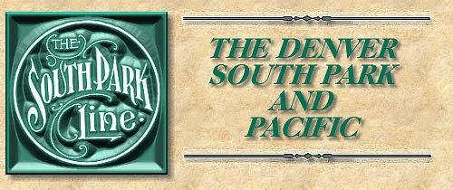
| The following is a description of a trip over the Denver South Park and Pacific Railway in 1885. The narrative comes from George Croffuts' "Grip Sack Guide to Colorado" published in 1885. This will give you an idea of what it was like to be there at the time. I want to thank Rick Steele for providing it for me. |
| On January 1st, 1881, this road passed into the hands of the Union Pacific railway company by purchase, and was thereafter known as tile "S. P." division of the Union Pacific railway. It is a three foot narrow gauge, organized in 1873, under the general incorporation laws of Colorado. The route was surveyed in 1874, and in the spring of 1875 the road was completed to Platte canon 18 miles distant, with a branch to Morrison 16 miles. In 1876-7 the route struggled up the canon but in 1878, when the Leadville carbonate discoveries startled the world, it was the first to profit by the enormous travel that set in for the new El Dorado, and from that time work was prosecuted with great vigor. In 1879 the road was extended through the South park, and February 22d, 1880, it reached Buena Vista on the Arkansas river, 135 miles from Denver, and 36 miles from Leadville. The latter city was reached by this company, over the tracks of the Denver & Rio Grande, until the completion of their Leadville branch via, Breckenridge in 1884. The line was extended via, Alpine Pass to Gunnison in 1884. Several branch roads were also constructed, one from Garo's to London junction, 15 miles and another from Como, via Breckenridge, to Dillon. Extensions are still being made, a branch having lately been completed up the Snake river to Keystone. |
| Two express trains leave Denver daily over this road, and both fully supplied with all the modern equipment--Pullman, drawing-room sleeping cars, etc. The Day Express leaves in the morning and the Leadville Express in the evening, usually after the arrival of trains from the east. |
|
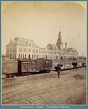 |
Union Station
(Image 00135) (122k) |
| The Day Express is the one to take in order to obtain the best views of the magnificent scenery, for which this route has become noted the world over. |
| "All Aboard !" From the depot our route is south, crossing the bed of Cherry creek, on a long bridge, soon after starting. We then come to the company's depot in West Denver, from which we run along through the city and cross the river at Valverde, three miles from our starting point. The grand old mountains are now on our right. The road continues along up the west bank of the Platte, crossing Bear creek near its mouth, and reaches Platte canon 20 miles from Denver. |
|
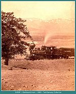 |
South Park and Pacific
East bound train 1880 (image 0024) (108k) |
| Bear Creek Junction is seven miles from Denver. Here the branch leaves the main line following up Bear creek to Gilman's, three miles; Lee's Siding, two miles; Mt.Carbon, one mile; and three miles more to the end of the road at Morrison. The principal business of this "branch" is the transportation of stone, as the best building stone and the most extensive quarries in the state are at this place. Morrison has a population of 200, and claims to have as attractions, "The Garden of the Angels" within a mile of the village, a soda lake, and sulpher springs. — See "Post Roads" No. 33, and 143. |
| From the junction it is four miles to Littleton, a small place, with big expectations, in the near future, of becoming a surburban residence of the city of Denver. Six miles further, through some good farming lands, well cultivated, our train reaches Archer, but seldom stops--from which it is three miles to Platte Cañon. A few miles above a company of English capitalists have constructed a canal by which water is taken from the Platte river, and conducted over the prairie to the eastward, a distance of 75 miles. The canal is large enough to carry the greater portion of the water usually flowing in the Platte. It runs along on the highest divide east of Denver, and the water is offered for sale to all applicants for irrigating the lands and for manufacturing purposes. See Irrigating Canals. |
| The grade to the point at which the road enters the mountains is light, but for the next 40 miles it is, in places, 170 feet to the mile. Entering the mouth of the canon, the road turns west, crosses and recrosses the river many times while ascending the narrow gorge between towering mountains. Some are 2,000 feet in height, and almost overhanging the road. In places these mountains are sloping and covered with pine, spruce and cedar trees; in the summer the shrubs, moss, ferns and countless flowers clinging to and growing from every nook and crevice, present a scene of gorgeous beauty, a scene where the God of nature has displayed his handiwork far beyond the comprehension of mortal beings. |
|
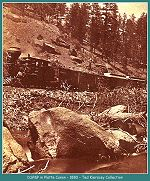 |
Denver South Park and Pacific in Platte Canyon
1880 (Image 00103) (216k) |
| Five miles from the mouth of the cañon Stephen's Gulch comes in from the left, and one mile further is Deansbury. Here is a large hotel, a kind of summer boarding house. Three miles from "Dean's" comes South Platte, a, side track, where trains stop only on signal. |
|
|
DSP&P locomotive #112 in Platte Canyon near Deansbury.
(Image 00118) (157k) |

|
Denver South Park and Pacific #10, "GRANITE"
at Deansbury Bridge in Platte Canyon. 1879 (image 0023) (199k) |
| Dome Rock, a, signal station, two miles above, is named from a mammoth dome-shaped rock on the south side of the road, far up the mountain side. A short distance above is a foot bridge across the river to a little park, which, in summer, is a great resort for pic-nic parties from Denver and the valley towns. |
| Passing Dome rock, we are whirled along over a solid road bed, through and around the projecting mountain spurs, with rapid and ever-changing scenery on either side; two miles brings us to Vermillion; then two to Park Siding, or Last resort; three to Buffalo, three to Pine Grove, three to Hilderbrand's, and three to Thompson's. |
|
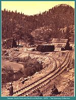 |
Denver South Park and Pacific at Buffalo
1878 (Image 00104) (204k) |
|
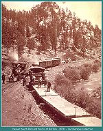 |
Denver South Park and Pacific
At Buffalo 1878 (image 0048) (181k) |
| The last six stations named above are of little interest to the traveler, being for the accommodation of wood choppers and lumbermen in the vicinity. |
| At Crosson's. two miles from Thompson's are located the Saxonia smelting and refining works. Rich mineral deposits are found near, and several hundred locations have been made. Some ores are assaying up in the thousands. From Crosson's the cañon becomes a narrow gorge, with perpendicular or overhanging cliffs rising to a great height, bare and grand in their rugged outlines. A few more revolutions of the wheels, and the mountain sides slope away, and we are at the beautiful Estabrook Park, four miles from Crosson's. This place presents some attractions as a summer resort, particularly to those fond of hunting and fishing. In the adjacent country, deer, bear and other game are quite plentiful, and in Deer creek and other small creeks that reach the Platte river near this, trout of the finest quality, are abundant. |
| Bailey's is three miles further west. It is situated in a narrow valley, varying in width from one-eighth to half a mile, for the next tell miles. The near mountains on either side are low and covered with a young growth of pine and cedar trees, with high timber-covered elevations looming up in the distance, in all directions. Opposite this station the old "Bradford Hill" wagon road to the South park comes down from the north; it is of as little utility now as the stage coach compared with the palace car on the rail track. |
|
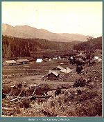 |
Bailey's
(Image 00117) (115k) |
| From Bailey's it is four miles to Slaght's and seven more to Grant. Near this station reports locate several lodes of rich ore and the station may yet be as renowned as its namesake, General G. |
| Webster is three miles from Grant, and 60 from Denver. While this station was the "end of the tracks" it was a busy place, with great expectations. Stages leave here for the mining camps in Hall valley, Montezuma. etc. — See Post Roads, No. 35, |
|
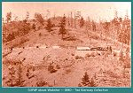 |
Denver South Park and Pacific Above Webster
(image 0041) (82k) |
|
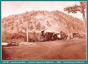 |
Denver South Park and Pacific
Eastbound #42 Jackson Special at Webster (image 0050) (136k) |
|
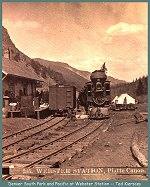 |
Denver South Park and Pacific locomotive at Webster Station
1878 (Image 00101) (186k) |
|
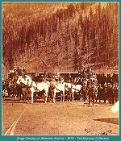 |
Stages at Webster Station
1878 (Image 00108) (187k) |
| Soon after leaving Webster our route curves to the right, up Hall's gulch; then, by looking far up the mountain side to the left, we can see the roadbed over which we will soon be traveling and looking down to this point. — See Illustration Page 45. |
|
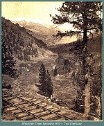 |
Webster from Kenosha Hill (Image 00111) (239k) |
|
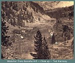 |
Webster from Kenosha Hill
Close up view 1880 (Image 00112) (143k) |
| Ah ! the view will be grand, particularly if the sky be clear; may be, a feeling of awe, wonder and admiration will be inspired; and as we proceed on, up, around projecting mountain spurs, over high embankments, through deep and gloomy gorges and chasms, may be, we shall experience a thrill of pride, a glow of exultation, at the engineering skill displayed, and the perseverance of our people in overcoming such mighty obstacles and landing us safely at Kenosha Summit, 10,130 feet above the level of the sea. It is reached by a grade of 158 feet to the mile — and is seven miles from Webster, and 76 from Denver. |
| Leaving the station, a few miles brings our train to the extreme southern point of the "Kenosha Hills," and as it curves away to the west and northward one of the finest views in America, it not in the world, is before us. See page 50. Here is the valley of the great South park, 50 miles in length by 10 in width, spread out in all its beauty, bordered on the east by a heavily-timbered range 2,000 feet above the valley, while to the west, the "Snowy Range" extends as far as the eye can reach. In this range, in plain view, are a number of the highest peaks in Colorado, among which are the Guyot. Hamilton, Lincoln, Bross, Buckskin, Horseshoe, and Silver Heels, that vary in altitude from 13,565 feet to 14,296 feet. |
|
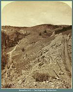 |
Kenosha Hill
1883 (Image 00116) (155k) |
| In this wonderful "park" can be seen the route of our road for fully 40 miles, as it winds away to the southward, with its stations, the Platte river and its many tributaries, ranches in every direction, and numberless herds, fairly rivaling the great "Valley of the Bagdad," of ancient story. |
| Jefferson, the first station after descending to the "park," is reached in four miles from the summit. The settlers hereabouts are mostly engaged in mining for gold, silver, coal and other minerals, putting up hay for shipment, or raising cattle and sheep. None are idle. Game, such as deer, elk, bear, mountain lions, grouse, and occasionally mountain sheep, are plentiful in the vicinity, while the streams are stocked with an abundance of the finest trout. — See Post Roads, No. 39. |
| Rolling along down the valley, we come to Tarryall creek, up which, about two miles, is Hamilton. Just above the town are the placer mines, which made Tarryall--since called Hamilton— a "booming" camp in 1880. These placers were short lived and soon abandoned, but during 1880 many were re-located by companies who are putting up hydraulic works and are about to wash them over again, with every prospect of rich returns. |
| Como is reached in eight miles from Jefferson and is destined to be a place of some importance. Extensive coal mines, of good coking duality, are located a short distance east of the town, and with the many placer and quartz mines near by, Como will become an important point. Altitude, 9,803 feet. |
|
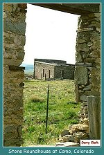 |
Stone Roundhouse at Como
on the Denver South Park and Pacific (69k) |
| The Breckenridge branch of the Union Pacific railway commences at Como and runs to the north west up Tarryall creek, winding in and out, up and around the gray old crags for 12 miles to the summit of the pass over the "Snowy Range," across the backbone of the continent to a station called Boreas, 11,408 feet above the level of the sea. Here the waters divide. Should a bucket full of Adam's ale be emptied on the summit of this grand ridge it would separate, one portion finding its way to the Gulf of Mexico and the other to the Gulf of California, |
| While reaching this altitude and here, the views have been very extensive and striking, covering a great area of country, plains, valleys and a bewildering wreck of mountains, worth a long journey to behold. |
| Starting on our downward route, we descend 890 feet in the next four miles and come to a small station called Argentine, from which it is five miles to Breckenridge, altitude 9,555 feet. See under Cities, Towns, etc. also Post Roads, 38,37. |
| Our run is now down the Blue river past mills, canals and placer mining on every side. Sixteen miles brings us to Dickey. Here we find the Keystone branch, which continues down the Blue three miles to Dillon, a small village at the junction of the Blue, one mile trom Snake river. See Post Roads, No. 32. Turning east up Snake river four miles introduce us to the "end of the track" at Keystone. Stages leave here daily for the mining towns of Montezuma, Chihuahua and Decatur — eight, 11 and 12 miles distant respectively; fare $1.50 to the former point and $2.00 to the latter two. — See Post Roads, No. 36. |
| Returning to and leaving Dickey, our route is south over the Leadville branch; Frisco is reached in three and a half miles, where we enter Ten Mile canon and come to Wheeler in six miles, Kokomo in six more, Robinson in two more, and three more finds us at Climax, where we are on top of Fremont's pass, at an altitude of 11,325 feet. The view from this point is very extensive, awe inspiring and indescribable. That of the Mount of the Holy Cross to the westward is particularly fine. On our left the Buckskin rises 2,031 feet above our train, and numerous lesser peaks appear all around. Continuing on, winding in, out and around the weird and wonderful spurs far above the beautiful valley on our right, Leadville is reached in 14 miles. — See Leadville, under the list of Cities, Towns, etc. |
| Returning to Como, we shall continue our journey towards the Gunnison. |
| The appearance of the mountain ranges for the next 20 miles presents new beauties and surprises at every mile, and as the train winds around, in and out of the "spurry" fingers thrust out from the giant ranges on each side, the scene of everchanging beauty can never be forgotten. |
| Red Hill is five miles from Como, then nine miles to Arthur's, and two miles more to Garo's, Situated on a branch of the South Platte river, 104 miles from Denver, at the junction of the London branch of the Union Pacific railway. This branch follows up the valley of the Platte, directly towards the mountain, 10 miles to Fairplay, one of the oldest mining towns in Colorado. — See under Cities, Towns, etc. also Post Roads No 42, 43. From Fairplay it is five miles to the "end of the track" at London. — See Post Roads 40, 41. |
| The tourist will find a trip over this branch of the road: a sojourn and ramble about the placers and other mines in this vicinity, and a climb up and around Mts Lincoln and Bross near at hand, a tour of great interest, conducive to health and general information. See Post Roads No 54, 55. |
| Returning to and leaving Garo's, the park widens, and after crossing several little tributaries of the Platte, Mill and High creeks, we pass the deserted town of Weston, two miles distant. |
| For six months Weston was a busy place, with a "floating" population of several thousand. It was the "end of the track" from whence stages, passengers, mail, express, and all freight for Leadville turned westward over the "Rockies," via the "Pass," at an elevation of 11,800 feet, and a villainous "Pass" it was. |
| Six miles beyond Weston is Platte River, a side track station, situated on the main river of that name, surrounded by marshy grounds and lakes of salt water. A few miles beyond, on the left, are located the first and only salt works in Colorado. When these works were erected, in 1864, all the salt used in this whole western country had to be freighted in wagons from the Missouri river, 700 miles away, at a cost, for freight alone, of from four to 20 cents per pound. When the springs near the works were discovered, they were thought to be very valuable, and no little contention arose as to the title. However, the first claims were settled and the business of salt making sprung up, and soon became very profitable. Then, as is too often the case in the west, litigation commenced between the owners, followed by injunction after injunction until all parties interested were impoverished. Meantime the railroads were advancing day by day, which meant cheap salt. The lawyers commenced their work in 1866, and succeeded in closing the works in April 1868, since which time they have remained closed. We hear that it has recently been decided, now that the works are valueless, the litigants plucked, and the railroads have destroyed the rich prospects. Moral: If you have a good business look out for, and keep out of the lawyers' hands, they are hungry fellows always hunting a fat "grub stake." |
|
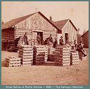 |
Platte Station with silver bullion
1882 (Image 00119) (119k) |
| Passing on by all these old remembrances, our train commences to climb up to Hill Top, or Trout Creek pass, altitude 9,410 feet. Here the waters divide, on one side entering the Platte and on the other the Arkansas river. From this station we fairly fall away to the valley of the Arkansas, or about 2,000 feet in the next 23 miles. |
| From the summit we obtain the first view of the great Sawache range, which separates the Gunnison and San Juan country from the valley of the Arkansas. Across these mountains we must pass, in about a southwest direction from this station. Two miles from Hill Top is a little station called Divide, and about one mile below, by keeping a sharp lookout on the right, can be seen the largest and finest spring of fresh water in the state. It is the head of Trout creek, and the crystal fluid fairly pours out beneath a high cliff, close to the roadside. Just below, on the left side, are several other springs, but not so large. In the creeks flowing from these fountain heads "speckled beauties" are very abundant; those fond of fine trout can find them here. |
| Five miles from Divide is Trout city, but the station is called McGee's. The railroad company has a good station building and telegraph office and the surroundings are inviting. Game is abundant in the hills, and trout in the streams, all then, that is wanted, after "bagging game," is a good cook and a good appetite, which last you are pretty sure to have, if you catch the game. After rolling down the creek for six miles, we reach the valley of, and cross the Arkansas river, from which point it is three miles to Buena Vista, distance from Denver 135 miles, and to Leadville 37 miles. See Cities, Towns, etc, also Post Roads No. 66. |
|
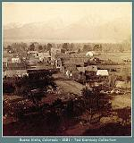 |
Buena Vista
1881 (Image 00114) (121k) |
|
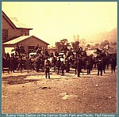 |
Buena Vista
1883 (Image 00102) (155k) |
|
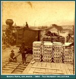 |
Denver South Park and Pacific at Buena Vista
1884 (image 0021) (68k) |
| From Buena Vista our route to the Gunnison and San Juan country is down the west bank of the Arkansas river, seven miles te Nathrop, thence directly west, up Chalk creek five miles, to Haywood Springs, one mile further to Hortense. At both of the last named stations are situated hot springs, of which more hereafter. |
| From Hortense it is four miles to Alpine. From a short distance west of Nathrop the road is built along the creek, with high bluffs on both sides; the distance between the bluffs has been gradually narrowing, until above Hortense the contraction takes the shape of a mountain gorge, and well it may, as Mt. Princeton rises from the water's edge on the north to an altitude of 14,199 feet, while on the south and directly opposite towers Mt. Antero. 14,245 feet, while beyond, only a short distance, is Mt. Shavano, 14,239feet. |
|
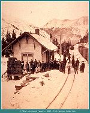 |
Denver South Park and Pacific
At Hancock station in winter 1885 (image 0045) (131k) |
| Forest City and St. Elmo are reached four miles above Alpine. where are located mineral veins of great prospective value. Five miles further, through scenery most grand and diversified, we reach the thriving town of Hancock. This place is situated away up on the eastern slope of the Sawatch, or main chain of the Rocky mountains, at an altitude of 10,919 feet above sea level. It is a mining town three miles east from the entrance to the world-renowned |

|
Denver South Park and Pacific locomotive at the upper level of the Alpine Tunnel at the west approach at Tunnel Creek
(Image 0017) (142k) |

|
Mount Antero, Alpine Pass
(Image 00105) (150k) |
| Alpine Tunnel. This remarkable piece of work, the result of fine engineering skill and "Paddy's brawny arms," is 11,523 feet above the level of the sea — above "timber line," above where trees and vegetation grow, or animal life is found; all is rocks, little rocks, big rocks, and rocks of every shape and dimension, where the air is pure and thin. Where at times the charming zephyr plays seductive airs, and anon the blizzard sports such pranks as tend to "bull the stock" of the inferno. |
|
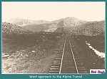 |
Denver South Park and Pacific
West approach to the Alpine Tunnel (96k) |
|
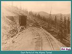 |
Denver South Park and Pacific
East approach to the Alpine Tunnel (106k) |
| This tunnel is 1,830 in length, 14 feet in width, 17 in height and with one exception it is the highest point in the world reached by steam cars. In passing through you are transferred from the Atlantic to the Pacific slope; here the view changes. On the left, and rising perpendicularly, are the mountains along which our roadway has been blasted from the solid rock. From the high shelf and palisade thus formed is an appalling depth terminating away down in the valley into which there is a gradual, sinuous descent, while the surrounding natural wonders are indescribable. |
|
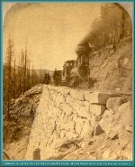 |
Denver South Park and Pacific
Climbing to the Aplpine Tunnel by the Locomotive Trail, below Woodstock 1882 (Image dspp0030) (328k) |

|
Woodstock Slide
(Image 00138) (99k) |
| Quartz is it little side track from which it is nine miles north to Drewer. — See Post Roads, No. 70. |
| Pitkin is our first regular station west from the tunnel and it is 13 miles from the eastern entrance. Continuing westward, we descend Quartz creek, passing Ohio city in eight miles, Parlins in another eight, from which it is 12 miles down the Tomichi river through a beautiful country to Gunnison City, 208 miles from Denver. For a description of this important point, and of Crested Butte, Gothic Irwin, Lake City, Ouray and surrounding towns and mining camps--See Cities, Towns, etc. From Gunnison City the Mount Carbon branch of this line runs up Ohio creek 11 miles to Teachout and five miles more to Baldwin, where are located extensive coal mines. — See Post Roads No. 74. |

|
Pitkin
1881 (image 0049) (124k) |
| These are a few other photos of various South Park subjects and also other areas that later became a part of the Colorado and Southern Railroad, the surviving entity that began as the South Park. |
|
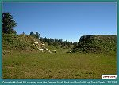 |
Colorado Midland crossing over the
Denver South Park and Pacific at Trout Creek 7/12/95 (98k) |
|
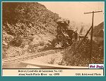 |
Denver, Leadville and Gunnison #112
Along the South Platte River 1898 (130k) |
|
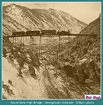 |
Devil's Gate Bridge
Georgetown, Colorado Kilburn photo (130k) |
|
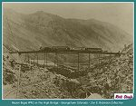 |
Mason Bogie #42 on the Devil's Gate Bridge Georgetown, Colorado
Jon E. Robinson Collection (112k) |
|
The Narrow Gauge Circle is written, maintained,and hosted by: Mark L. Evans Send Comments to:Mark L. Evans All original materials, text, and digital images Copyright © 1995-2004 Mark L. Evans. All rights reserved. Imitation is said to be the "sincerest" form of flattery.....Please don't flatter us without permission. |